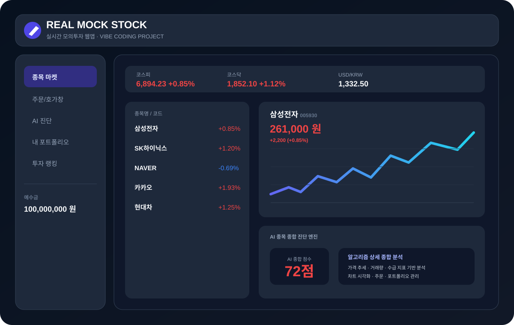

실시간 주식 데이터를 기반으로 종목 마켓, 주문/호가창, AI 종목 진단, 포트폴리오 관리, 투자 랭킹을 구성한 모의투자 웹앱 프로젝트입니다.

종목 검색과 카테고리 필터, 주문/호가창, 인터랙티브 차트, AI 종목 진단, 모의 포트폴리오, 투자 랭킹을 한 화면에서 제공합니다.
3초 간격으로 주가 데이터를 시뮬레이션하고, 선택 종목 변경에 따라 차트와 호가창, 주문 계산, 포트폴리오 평가 화면이 갱신되도록 구성했습니다.
썸네일과 프로젝트 상세 페이지를 포트폴리오와 연결했습니다. 원본 프로젝트 파일은 추후 저장소의 이 프로젝트 폴더에 추가해 확장할 수 있습니다.